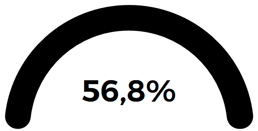
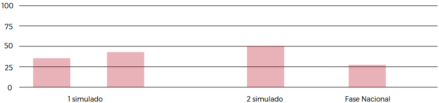

Selecione a ocupação:
Treinador
Michel Araújo
Aluno Competidor
Juan Kauê
Unidade
Campina Grande
Ocupação
Técnologias Web
Trabalhar com tecnologias da web é uma habilidade fundamental em um mundo que cada vez mais coloca a web no coração de uma plataforma moder- na. É também uma das mais complexas e diversas de todas as habilidades.
Os web designers e desenvolvedores pri- meiro estabelecerão um relacionamen- to profissional com os clientes para desenvolver uma compreensão profun- da dos requisitos de seu site. Fortes habi- lidades de design e comunicação, junta- mente com uma compreensão do públi- co-alvo, mercados e tendências, são es- senciais. Durante o processo de desen- volvimento, web designers e desenvolve- dores criam bancos de dados, criam pro- gramas, bem como testam e depuram sites.
Calendário de Simulados e Competições
| Ocupação | Período | Etapa | Drs Concorrentes | Formato | Local | Status |
|---|---|---|---|---|---|---|
| Tec. da Moda | 23/11/2023 28/11/2023 |
3 Simulado | SP, PE , GO | Online | SENAI PB | Agendado |
| Tec. da Moda | 23/11/2023 28/11/2023 |
3 Simulado | SP, PE , GO | Online | SENAI PB | Agendado |
| Tec. da Moda | 23/11/2023 28/11/2023 |
3 Simulado | SP, PE , GO | Online | SENAI PB | Agendado |
Desempenho por simulado
Desempenho por padrão e Competência
| Conteúdos Prova | 1 Simulado | 2 Simulado | ||
|---|---|---|---|---|
| Criar imagens renderizadas (2D) | 24% | 24% | ---- | ---- |
| Desenho técnico e medição | 70% | 70% | ---- | ---- |
| Engenharia reversa de modelos físicos | 45% | 45% | ---- | ---- |
| Materiais, software e hardware | 15% | 15% | ---- | ---- |
| Modelagem 3D | 8% | 8% | ---- | ---- |
| Organização e gestão do trabalho | 27% | 27% | ---- | ---- |
| Criar imagens renderizadas (2D) | 68% | 68% | ---- | ---- |
| Engenharia reversa de modelos físicos | 5% | 5% | ---- | ---- |
| Materiais, software e hardware | 99,9% | 99,9% | ---- | ---- |
| Modelagem 3D | 80% | 80% | ---- | ---- |
| Organização e gestão do trabalho | 72% | 72% | ---- | ---- |
| Desenho técnico e medição | 6% | 6% | ---- | ---- |
| Engenharia reversa de modelos físicos | 34% | 34% | ---- | ---- |
| Materiais, software e hardware | 23% | 23% | ---- | ---- |
| Modelagem 3D | 9% | 9% | ---- | ---- |